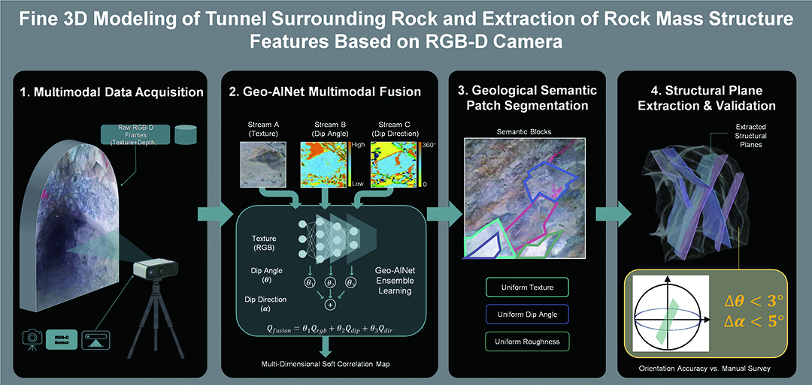
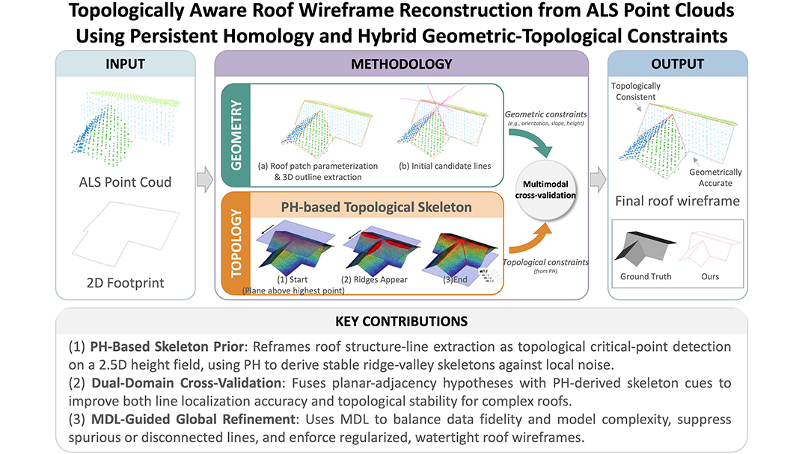
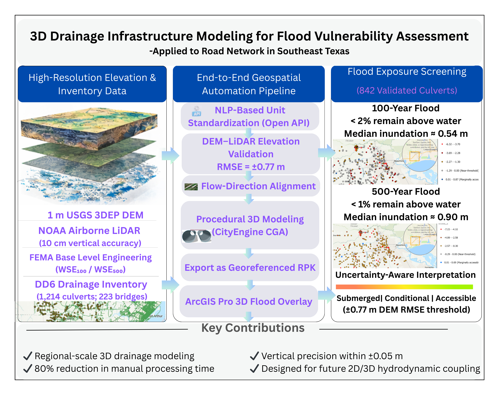
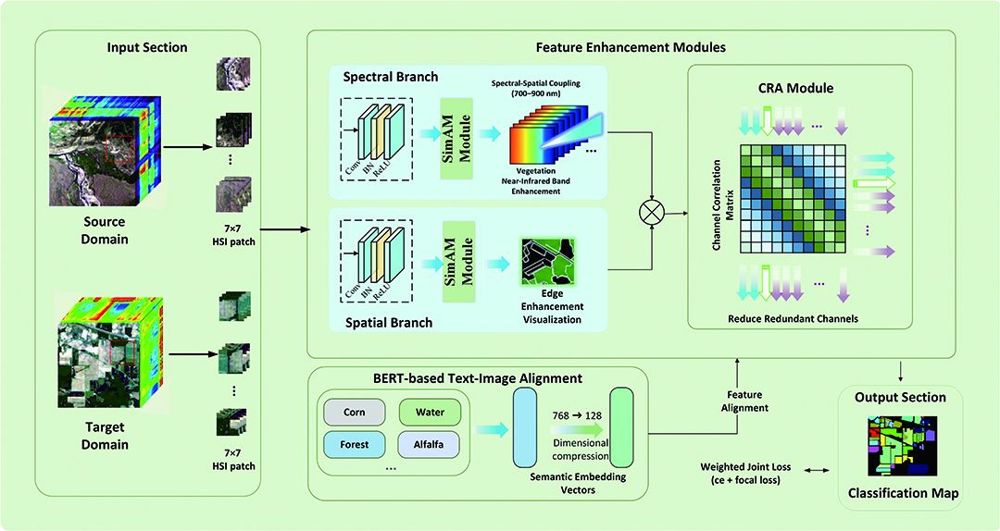
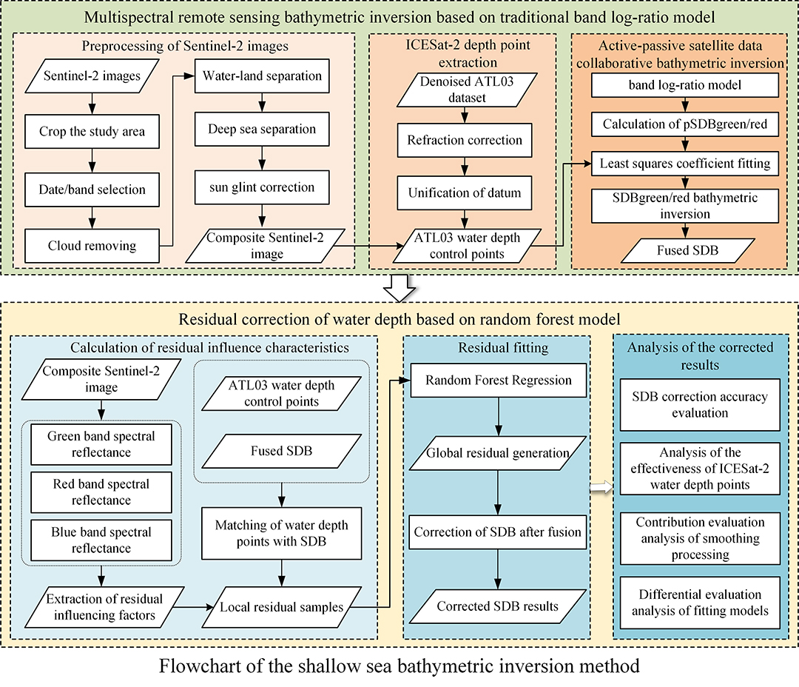
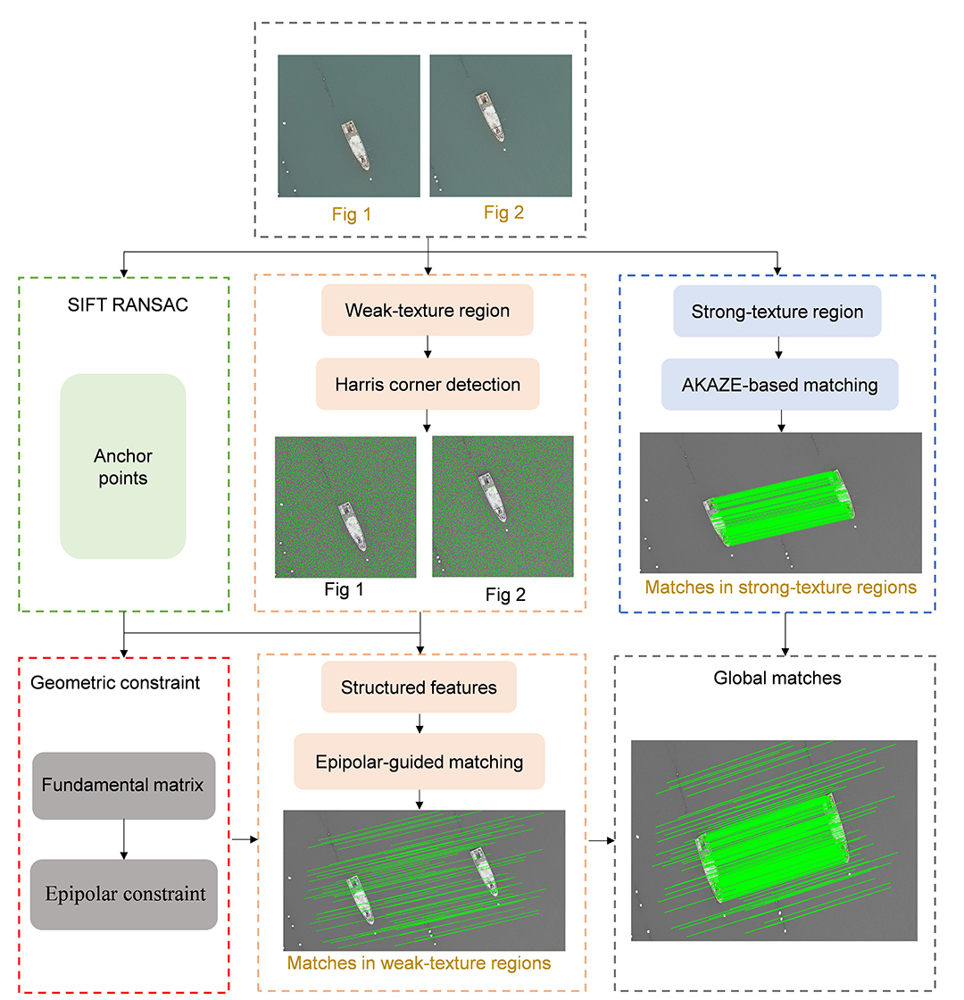

Pages: pp. 871–882
Authors: Zhang, Rongchun; Han, Jiaqi; Chen, Song; Jiang, Yi; He, Yanlan; Ge, Yufan; Shi, Shang; Liu, Lanfa;
Abstract:
Read more...
In the context of large-scale hydropower infrastructure, the accurate extraction of tunnel rock mass structural information is vital for informed engineering design. However, this task remains inherently difficult due to the complexity of subsurface geological conditions and the inherent limitations of conventional survey techniques. This study proposes an integrated methodology that combines high-resolution 3D reconstruction with the Geo-AINet ensemble learning framework to enable automated identification of structural planes. The process involves generating detailed tunnel models, extracting multi-dimensional semantic features, performing initial segmentation, and subsequently applying cluster analysis to refine the structural interpretations. Experimental validation confirms the method’s high level of precision: the extracted structural orientations exhibit average angular deviations of less than 3 degrees, with a maximum error margin not exceeding 5 degrees relative to manual measurements. These findings demonstrate the method’s capacity to meet stringent engineering standards while enhancing both the efficiency and safety of geological data acquisition in tunneling projects.

Research Articles Open Access
Editor’s Choice
Pages: pp. 883–891
Authors: Huo, Pengpeng; Jiang, Jinguang; Kong, Gefei; Fan, Hongchao;
Abstract:
Read more...
Airborne laser scanning point clouds constitute a primary data source for city-scale 3D building modeling. However, the automated reconstruction of geometrically accurate and topologically consistent roof wireframes persists as a formidable challenge, hindered by data noise, uneven point density, and the topological complexity of urban roofs. Existing data-driven methods exhibit high sensitivity to local fitting errors, frequently leading to topological inconsistencies, whereas model-driven approaches are constrained by predefined primitive libraries, limiting their generalization to complex composite roofs. To address these limitations, this paper proposes a novel framework for roof wireframe reconstruction that fuses topological data analysis (TDA) with hybrid geometric-topological constraints. A core innovation of this framework is the application of persistent homology to extract globally stable topological skeletons from 2.5D height scalar fields, serving as a robust topological prior independent of local geometric noise. Specifically, the method first generates regularized 3D eave lines constrained by 2D building footprints. Subsequently, a “geometry–topology” dual-domain cross-validation mechanism is used to validate geometric hypotheses derived from planar adjacencies against TDA-extracted topological critical points (ridges and valleys), thereby effectively suppressing spurious structure lines. Finally, a global optimization model governed by the minimum description length principle enforces implicit regularization to rectify local geometric distortions and guarantee topological closure. Experiments on the Trondheim dataset demonstrate that the proposed method achieves a root mean square error of 0.443 m, while enhancing the length-weighted completeness and correctness of structure lines to 96.23% and 97.41%, respectively. These results validate the efficacy of integrating height-field–based topological skeletons for reconstructing complex roof wireframes, offering a scalable and robust solution for automated large-scale urban 3D modeling.

Pages: pp. 893–903
Authors: Ibironke, Ademola; Dhakal, Uddav; Bhusal, Shishir; Wu, Xing; Kim, Yong Je; Lai, Feilin;
Abstract:
Read more...
Urban flooding poses escalating risks to transportation infrastructure in low-lying, flood-prone regions, underscoring the need for scalable, elevation-aware assessment frameworks. This study evaluates the flood vulnerability of drainage infrastructure in Southeast Texas by developing an automated 3D modeling framework that integrates digital elevation models, airborne lidar data, and water surface elevation scenarios through a fully automated pipeline incorporating large-language-model–assisted data standardization, Python/ArcPy geometry generation, and attribute-driven computer-generated architecture procedural modeling. Using ArcGIS Pro and CityEngine, 842 culverts and 223 bridges were modeled following quality-control filtering, and flood exposure was quantified using an elevation-differencing metric for 100- and 500-year flood events. The results indicate that fewer than 2% of culverts remain above water during a 100-year flood, while fewer than 1% remain accessible under a 500-year event, with median inundation depths of approximately 0.54 and 0.90 m, respectively. The proposed workflow reduces manual processing time by approximately 80% while preserving vertical consistency, providing a transferable and uncertainty-aware framework to support regional flood-resilience planning and future integration with hydrodynamic models. The code and supporting materials associated with this study are publicly available via GitHub at: aibironke/3D-Drainage-Flood-Vulnerability

Pages: pp. 905–913
Authors: Dang, Yuanyuan; Li, Mengyu ; Li, Hao
Abstract:
Read more...
Cross-domain few-shot learning has attracted increasing attention in hyperspectral image classification. However, in scenarios with scarce annotations and significant domain shifts, existing methods struggle to simultaneously adapt to the inherent spectral-spatial coupling of hyperspectral data while maintaining high-dimensional data-processing efficiency and balancing the learning of few-shot and cross-domain hard samples. This study proposes a collaborative optimization scheme based on improvements to the cross-domain few-shot learning with cross-modal alignment and supervised contrastive learning method. Specifically, an enhanced SimAM module dynamically weights spectral-spatial features to strengthen discriminative information of ground objects and mitigate domain shifts. A Channel Relation Attention module is introduced to capture channel-spatial dependencies and adaptively select key channels, improving high-dimensional feature processing efficiency. Moreover, a weighted joint loss function combining cross-entropy and focal loss is constructed, with class weights adjusted according to the joint distribution of source and target domains to balance sample learning priorities. Experiments on three benchmark hyperspectral data sets demonstrate that the proposed method achieves significant improvements in classification accuracy, robustness, and cross-domain adaptability.

Pages: pp. 915–925
Authors: Dong, Zhipeng; Li, Zhixian; Liu, Yanxiong; Feng, Yikai; Chen, Yilan; Huang, Guoan;
Abstract:
Read more...
Satellite-derived bathymetry is an important method for obtaining shallow sea water depth. To address the problem that the traditional band log-ratio model exhibits significant discrepancies in bathymetric inversion accuracy in both shallow sea (<2 m) and deep sea (>12 m), where water depth is overestimated in shallow areas and underestimated in deep areas, this paper proposes a bathymetric inversion method from active–passive satellite remote sensing data based on a residual correction model. First, the proposed method uses the denoised Ice, Cloud, and Land Elevation Satellite-2 (ICESat-2) ATL03 data set as precise depth control points to construct and implement the traditional band log-ratio model, generating initial bathymetric inversion results. Second, the initial inversion result is compared with the ICESat-2 depth control points, and the residuals between the initial water depth estimates and the true water depths in the local region are calculated. Then, based on the relationship between the spectral characteristics of remote sensing images and water depth residuals, a random forest model is constructed to fit the residual distribution across the entire study area. Finally, using the residual distribution derived from this fitting process, the initial bathymetric inversion results for the entire region are corrected, thereby improving the accuracy and precision of the water depth data. Experimental results demonstrate that the proposed method achieves a bathymetric inversion accuracy with the root mean square error better than 1.57 m and the mean absolute error better than 1.15 m for islands with varying seabed topographies, providing high-precision shallow sea bathymetric inversion results.

Pages: pp. 927–939
Authors: Chen, Ming; Shi, Jiangong; Ma, Zhenling; Xie, Hong; Wang, Zhengjie;
Abstract:
Read more...
Photogrammetric mapping missions using robots or unmanned aerial vehicles (UAVs) often encounter environments where sparse strong-texture structures are found alongside extensive weak-texture surfaces, such as indoor corridors with frames and aerial views of shorelines. Establishing accurate correspondences under such circumstances remains a major technical challenge. Traditional methods can only match a few or no correspondences. Deep learning algorithms can yield stable matches in weak-texture regions. However, they rely on large-scale annotated data and computational resources, limiting their real-time application and generalization capability. This article proposes an anchor point–assisted image-matching method, using Euclidean distances and angular relationships between corner points in the weak-texture area and anchor points in the strong-texture area to establish structured features, enhancing the distinctiveness of the corner points in the weak-texture area. Meanwhile, epipolar geometry constraints are applied to restrict the candidate corner points search to a one-dimensional range, thereby improving the accuracy, efficiency, and reliability of the corner point matching. Comparative experiments on indoor, outdoor, and UAV data sets demonstrate that the proposed method achieves a greater number of correct matches than scale-invariant feature transform (SIFT), oriented FAST and rotated BRIEF (ORB), KAZE, AKAZE, grid-based motion statistics (GMS), SuperGlue, and LightGlue with a conventional CPU configuration. The presented method, SuperGlue, and LightGlue achieve a success rate (SR) of 100% on three data sets and secure sufficient correspondences in weak-texture regions. In contrast, the SR obtained by traditional methods ranges from 70% to 80%. In addition, our method runs in under 3 seconds, whereas the deep learning methods still require over 10 seconds even on a lightweight CPU. The effects of anchor point numbers, dual threshold settings, and epipolar search range on matching performance are analyzed to identify the optimal parameter configuration. The proposed method provides potential for robot and UAV photogrammetric mapping applications in sparsely textured environments based on resource-constrained platforms.
